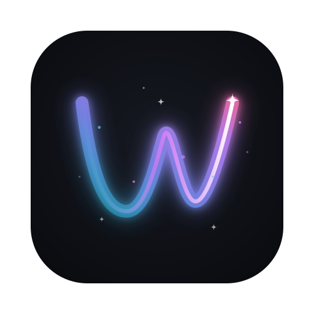

Unpack. Open. Send.
One self-contained binary per platform. Keep it where you work, without an installer.

wisp.Your requests. Your files. Your machine.
A native HTTP client that gives your APIs room to breathe.
macOS · Windows · Linux / Open source, Apache 2.0
1 {
2 "id": 42,
3 "name": "Alex Morgan",
4 "role": "developer",
5 "status": "a little more focused"
6 }01 / THE WORKSPACE An illustrative preview. Try the tabs or send the example request.
Open a collection, pick an environment, send a request. Wisp keeps that loop simple, with a native interface built in Rust and GPUI.
One self-contained binary per platform. Keep it where you work, without an installer.
A native workspace with light and dark themes, keyboard shortcuts, and a command palette.
Import curl, Postman v2.1, or OpenAPI 3. Unsupported features are reported, so you can see what needs attention.
Inspect responses, review request history, and see DNS, connection, first-byte, and total timing.
Requests are TOML. Bodies can live alongside them. Environments have their own files. Review a change in a diff, share it in a commit, and open it in Wisp.
Meet the file format →# A request you can read at a glance.
name = "Get user"
method = "GET"
url = "{{baseUrl}}/users/{id}"
[path]
id = "42"
[auth]
type = "inherit"The same things that make Wisp useful to a developer—plain files, explicit configuration, and explainable requests—make a good foundation for agent workflows.
A read-only CLI to validate collections, inspect their structure, and explain how a request resolves. Structured JSON gives tools a way to work with the same facts.
validate · inspect · explainA shared execution layer for the desktop and CLI, followed by a command-line runner and bounded, redacted context snapshots.
run · snapshotDirect MCP integration is deferred until reviewable edits and scoped send policies have a solid foundation. Readability comes first; broader agent control comes later.
review · scope · approveThis is the development direction, not a list of features in the current download. Plans can change. Follow the roadmap ↗
Download Wisp for your machine. Unpack it and get going.
Links open the latest GitHub release. Choose your platform’s archive and verify it with SHA256SUMS.
Installation details · Release notes